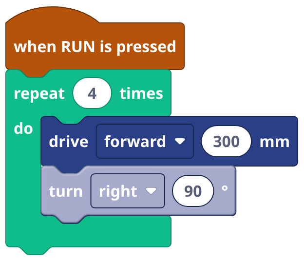
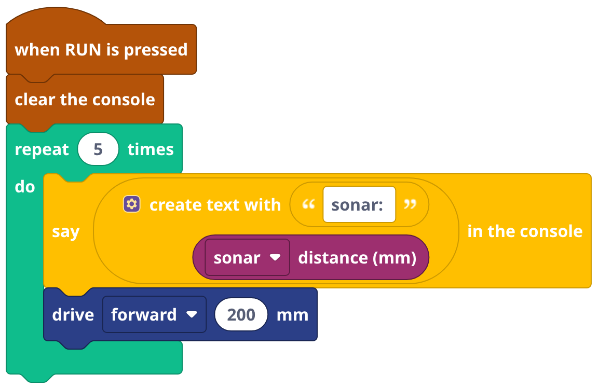
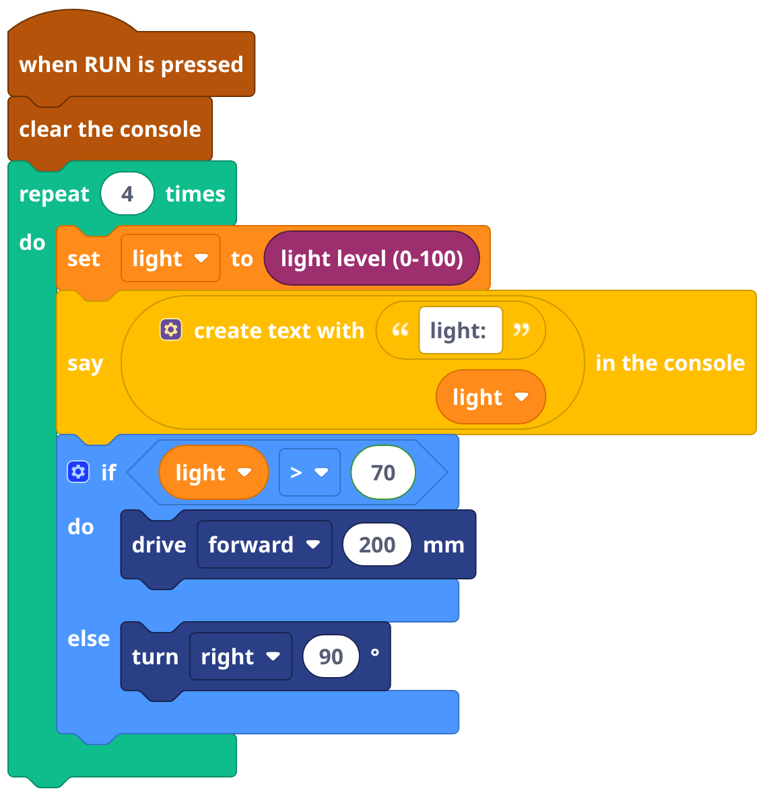
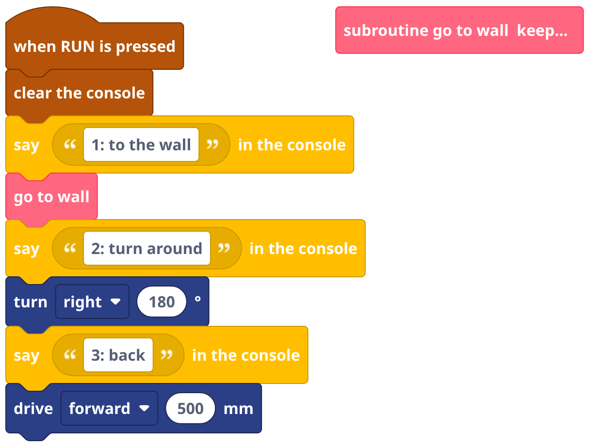
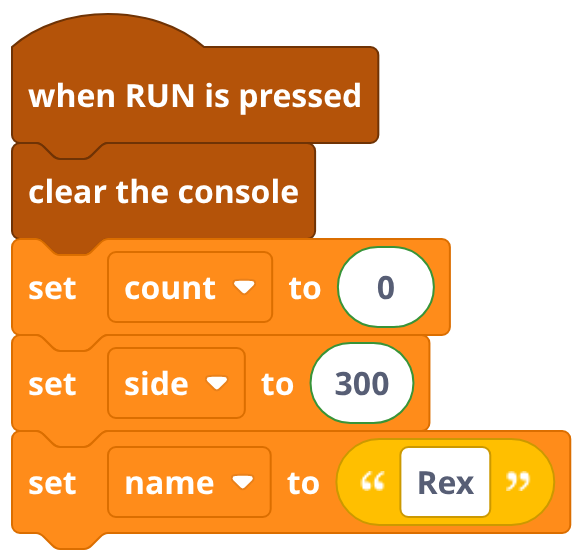
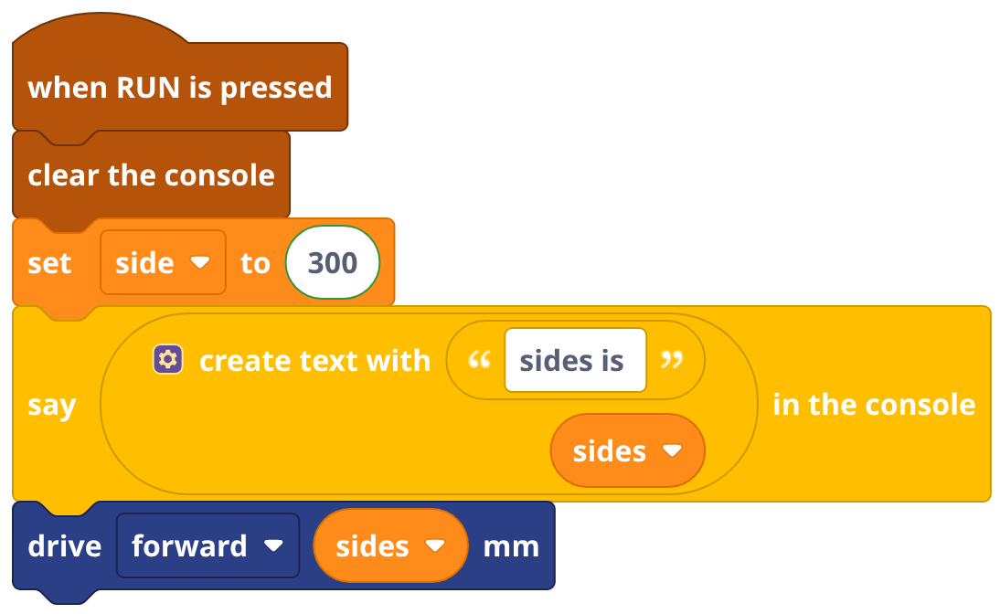
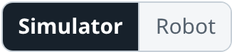

Debugging with Blockly
says: is your say block, sim: a move. ⚠ is a warning, ✖ an error: the program stopped there.

The block that is running lights up. Set the simulator Speed to real time to follow along.

Put say inside the loop: the console shows the sensor while the program runs.

Every sensor block reads again. Read it into a variable once, then say that variable and decide with it: the number you see is the number it used.

A bare 412 could be anything: say "wall: " and the number. Number your steps: the last one in the console is how far it got.

Right under when RUN: clear the console, then set every variable. Each run starts the same. (The Clear button empties it by hand.)

Every RUN starts all variables empty. sides is not side: a second variable nobody set. And the drive? Skipped, with no warning.

Wrong in the simulator too? It is the program. Right in the simulator, wrong on the robot? Look at the robot: its numbers, battery, sensor.
- Guess what is wrong.
- Change one thing.
- RUN.
- Look: better? Keep it. Not? Undo (Ctrl+Z).
Right-click, Disable Block on half the program. Bug gone? It is in that half. Or put just one subroutine under a when RUN and test it alone.
Maps 4 to 10 change every run, and real floors and batteries change too. Worked once? Maybe lucky. Three in a row: it works.
Read your program to a friend (or a toy), block by block: "then it turns right 90..." Bugs show up when you say what each block really does.